Style inspiration, personalized recommendations and accurate size guidance for easier online fashion shopping.
This fashion app gives users a seamless shopping experience by combining style inspiration, personalized recommendations and accurate size guidance. The goal: make online fashion shopping easier, more enjoyable and tailored to individual preferences.
Users who shop online often struggle to find clothes that truly fit their size and match their style — which leads to frustration, wasted time and reduced trust. A personalized Size Guide became the heart of the solution.
“Kids' sizes are always tricky.”
Mona, 31 · empathy map
“I need quick suggestions for Eid or school event outfits.”
Mona, 31 · empathy map
Enter weight and height to get a recommended size, plus a detailed chart in cm and inches.
Photograph an item and the app suggests pieces that go with it.
Add a review with a photo and earn 100 discount points.
Follow local stores, browse their brands and message them directly.

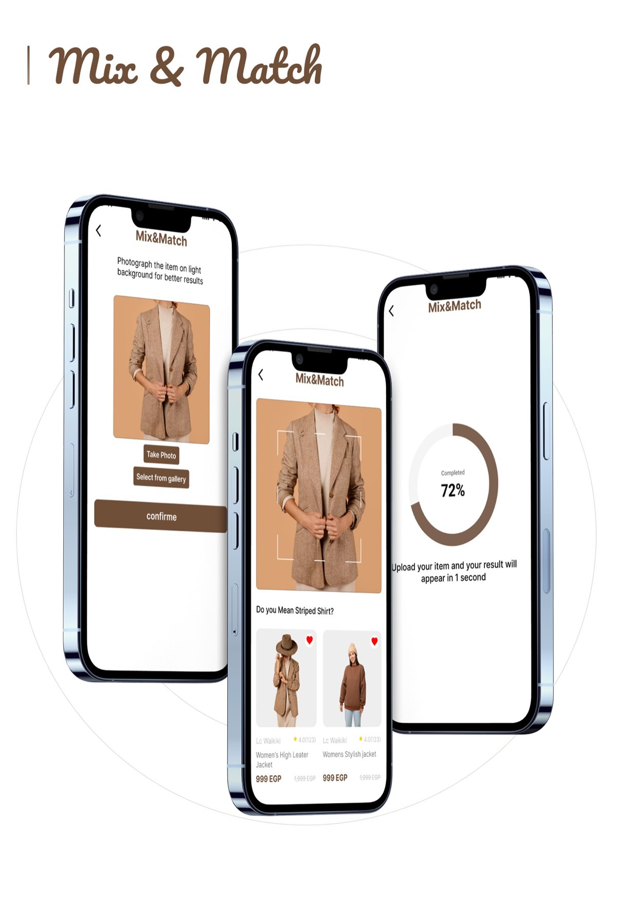

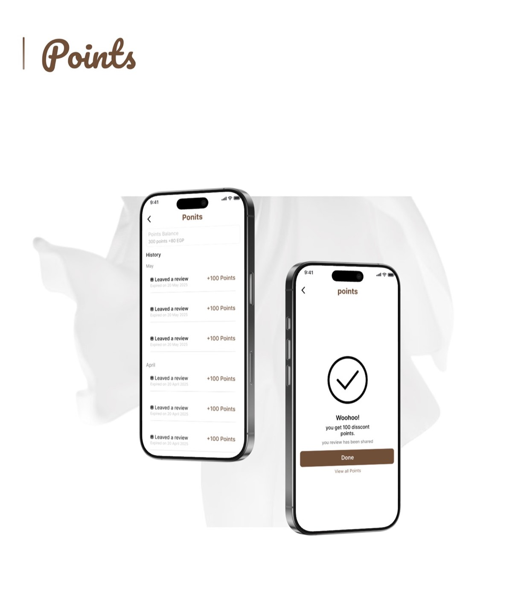


40 boards · research, flows, design system and all screens
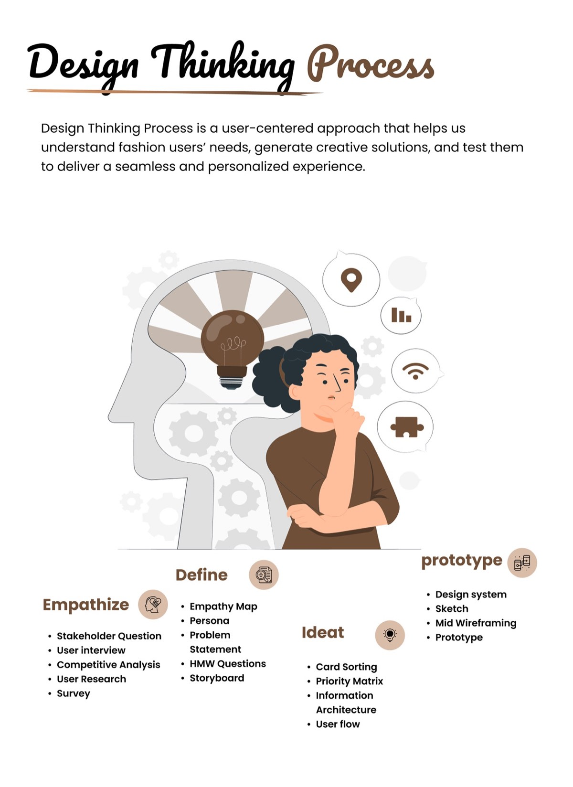
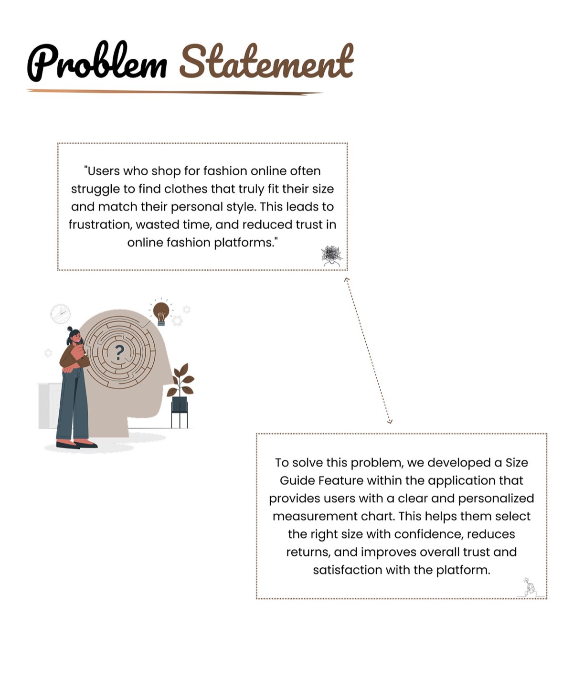


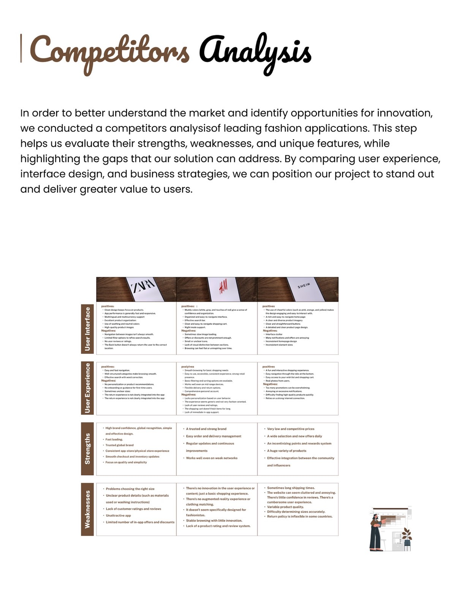
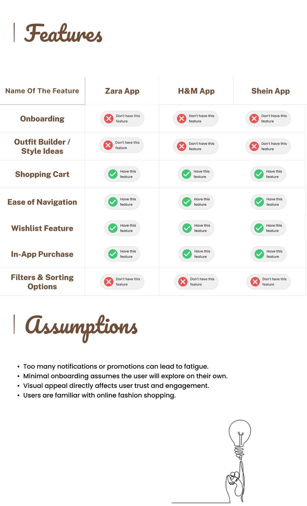
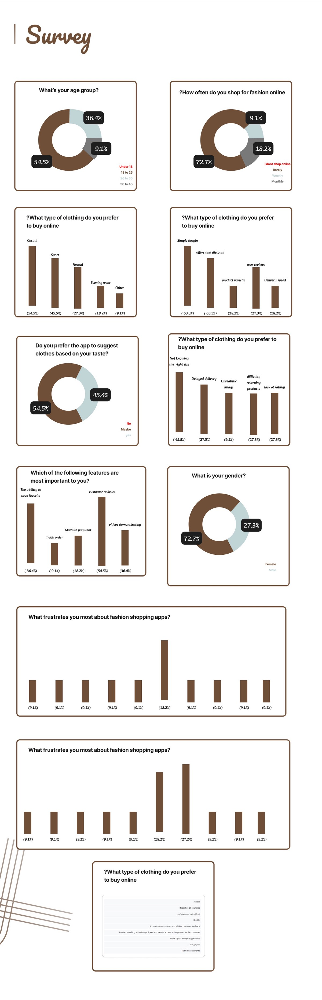
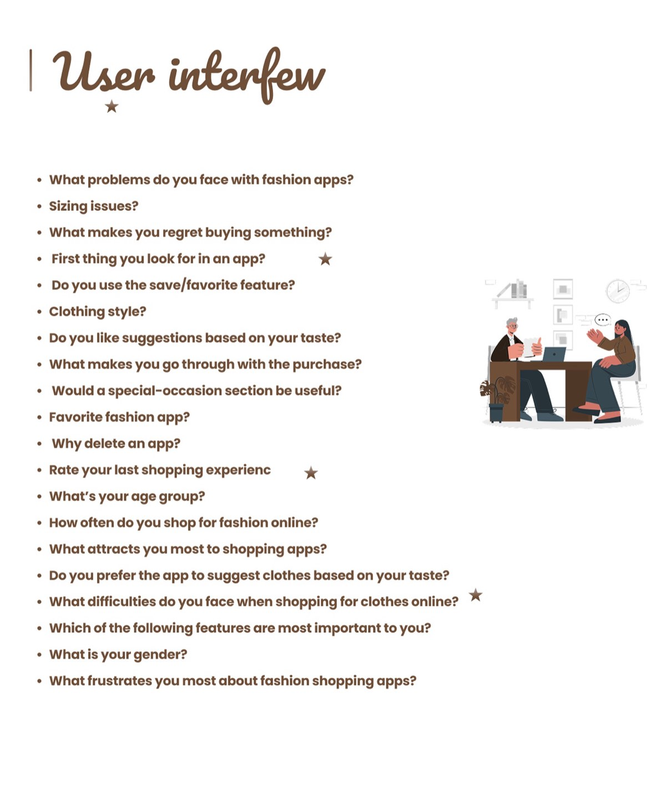

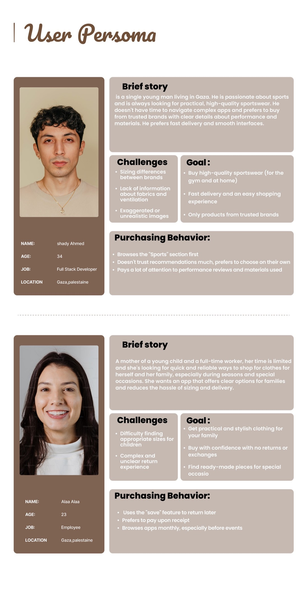

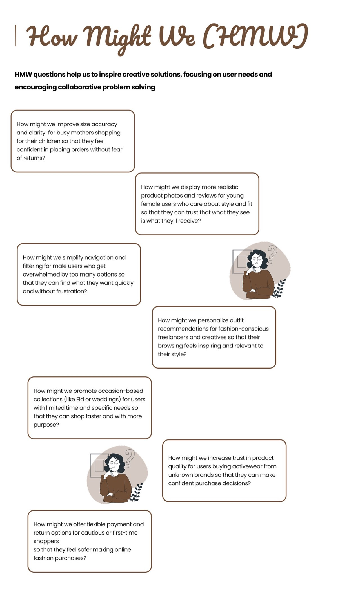

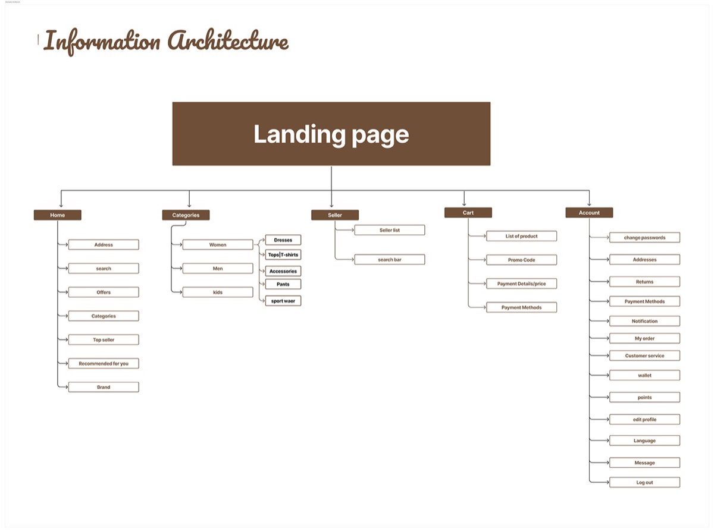
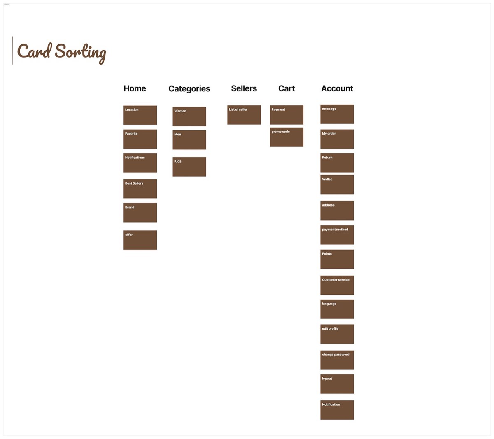


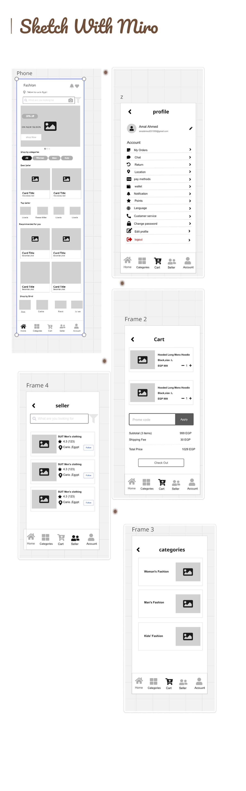


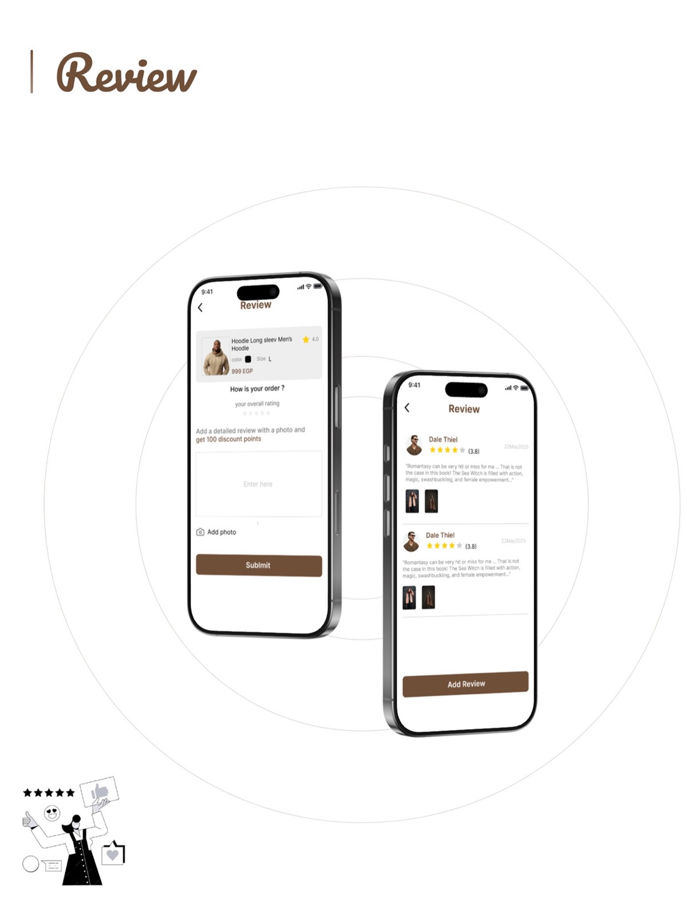